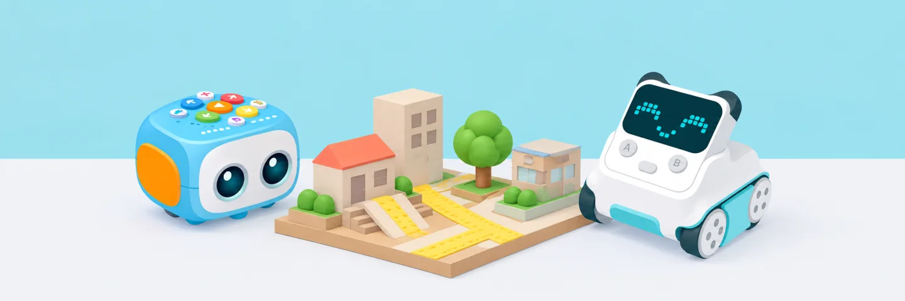

Situacions d'Aprenentatge
Filtra les situacions per trobar un repte aplicable al teu cicle, al robot disponible i a l’àrea que vols treballar.
Prenem com a referència el projecte Escola 4.0 de la Generalitat Valenciana, que impulsa la competència digital i el pensament computacional als centres educatius. Les propostes d’aquest catàleg es poden adaptar al projecte de cada centre i a les necessitats del seu alumnat.

Orientació curricular. Els filtres orienten la cerca; ajusta els sabers i criteris al nivell, a la programació del centre i al projecte del grup.
MicrobitCicle Superior (5è-6è)
La Ciutat Accessible per a Tothom
"Com podem eliminar les barreres arquitectòniques i sensorials del nostre barri perquè una persona cega o amb cadira de rodes es desplaci amb seguretat?"
SpikeCicle Superior (5è-6è) i ESO
Eco-Planta de Reciclatge Intel·ligent
"Com podem automatitzar la separació d'envasos, vidre i paper al menjador de l'escola per augmentar el percentatge de reciclatge?"
CodeyRockyCicle Mitjà (3r-4t)
La Mascota de les Emocions i el Benestar
"Com podem crear un company robòtic que ens ajudi a expressar i gestionar les nostres emocions quan estem enfadats, tristos o eufòrics?"
CodingSetCicle Inicial (1r-2n)
Ruta Saludable pel Mercat del Barri
"Com podem planificar la compra de fruites i verdures de temporada al mercat gastant el pressupost just i fent el camí més curt?"
TaleBotEducació Infantil (4-5 anys)
Els Viatges del Conte Màgic
"Podem ajudar el protagonista del nostre conte a trobar els seus amics superant el bosc misteriós tot explicant la història amb les nostres veus?"
Coding ExpressEducació Infantil (3-5 anys)
La Línia Verda del Tren Sostenible
"Com podem crear una línia de tren que connecti les parades i ajudi a comparar distàncies i recorreguts entre el camp i la ciutat?"
Desendollat (Sense robot)Cicle Superior i ESO
Espies Escolars i Secrets Criptogràfics
"Com podem protegir els nostres missatges i dades privades a la xarxa perquè ningú pugui suplantar la nostra identitat?"
MicrobitCicle Mitjà i Superior
L'Hivernacle Escolar Automatitzat
"Com podem garantir que les plantes del nostre hort rebin l'aigua i la llum adequades fins i tot durant el cap de setmana?"
CodeyRockyCicle Inicial i Mitjà
La Festa dels Autòmats: Art i Programació
"Podem sincronitzar una colla de robots perquè ballin una cançó tradicional al compàs de la música amb llums i disfresses creades per nosaltres?"
SpikeESO (1r-3r)
Missió Mart: El Rover de Rescat
"Com programar un vehicle no tripulat per explorar un cràter marcià, esquivar roques per sensor de distància i agafar una mostra mineral sense intervenció humana directa?"
Consulta la guia de disseny, planificació i avaluació
No hi ha situacions amb aquests filtres. Prova de canviar-los o restablir-los.